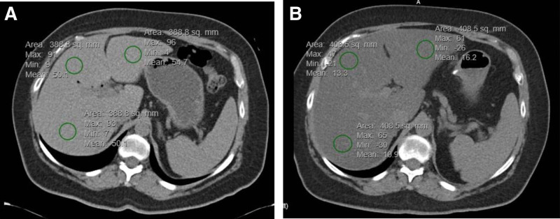
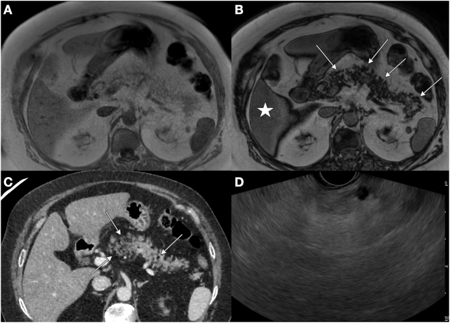

3148 — Đái tháo đường sau cắt tụy (type 3c diabetes): đường huyết dao động, hạ đường huyết và mỡ gan / Diabetes after pancreatectomy
Tags: pattern:duong-huyet-dao-dong pattern:ha-duong-huyet pattern:teo-tuy pattern:nhiem-mo-gan vung:tuy vung:o-bung vung:gan protocol:CT-bung protocol:MRI-PDFF protocol:CGM score:time-in-range
Mức chắc chắn (certainty): tổng hợp y văn (literature synthesis) — số liệu lấy từ một đoàn hệ 41 bệnh nhân cắt toàn bộ tụy theo dõi 12 tháng (JPEN J Parenter Enteral Nutr 2026 — PMC13169115), một đoàn hệ 503 ca cắt tụy có ghép tiểu đảo tự thân (Clin Transplant 2026 — PMC13127559), một đoàn hệ 100 ca cắt toàn bộ tụy chụp CT theo dõi mỡ gan (Surg Today 2026 — PMC13473225), một đoàn hệ 509 ca ung thư tụy (World J Surg Oncol 2025 — PMC11830169), một nghiên cứu thực hành thực tế 2.146 ca viêm tụy (Ther Adv Endocrinol Metab 2026 — PMC13558923) và một đoàn hệ 136 ca hậu cắt tụy tìm NAFLD (Medicine 2023 — PMC9875952). Phần cơ chế nào chưa có số đo trực tiếp được ghi rõ là suy luận.
Câu chốt: bệnh nhân không còn tụy không phải "type 1 không có tự kháng thể" — họ mất cả tế bào beta (insulin) lẫn tế bào alpha (glucagon), nên ba con số quyết định cách đọc phim và cách theo dõi: (1) sau cắt toàn bộ tụy, 100% có type 3c diabetes ở 12 tháng nhưng HbA1c trung vị chỉ 8,0% trong khi thời gian hạ đường huyết (time below range) trung vị 0,2% — đường huyết "trông ổn" trên giấy mà vẫn có cơn hạ đường huyết (PMC13169115); (2) ở 156 người đã cai insulin sau ghép tiểu đảo, 28,8% vẫn hạ đường huyết < 70 mg/dL, 20,5% xuống < 54 mg/dL và 25% trong nhóm đó có cơn cần người ngoài trợ giúp (PMC13127559); (3) mỡ gan xuất hiện ở 24,0% sau cắt toàn bộ tụy (so với 3,0% trước mổ), nữ 37,8% vs 12,7% nam, và BMI trước mổ cao là yếu tố dự báo độc lập (PMC13473225).
1. Tổng quan bệnh học – cơ chế hình ảnh (TẠI SAO)
1.1 Vì sao cắt tụy tạo ra một kiểu đái tháo đường riêng
- Tụy nội tiết có bốn loại tế bào trong đảo Langerhans: beta (insulin), alpha (glucagon), delta (somatostatin), PP (pancreatic polypeptide). Cắt tụy lấy đi toàn bộ bốn loại theo cùng tỉ lệ mô còn lại; cắt toàn bộ tụy thì không còn tế bào alpha.
- Glucagon là "phanh ngược" của insulin: khi đường huyết giảm, tế bào alpha tiết glucagon → gan phân giải glycogen và tân tạo glucose. Không còn alpha, phản ứng phòng vệ này mất hoàn toàn, nên bất kỳ liều insulin nào hơi quá cũng đổ thẳng xuống hạ đường huyết — và hạ đường huyết không có triệu chứng báo trước vì đáp ứng adrenaline cũng bị giảm sau nhiều năm dao động. (Suy luận từ sinh lý — đo trực tiếp glucagon sau cắt tụy không có trong các nghiên cứu trích dẫn.)
- Mất pancreatic polypeptide làm tăng nhạy cảm insulin ở gan và làm chậm/không đều rỗng dạ dày, khiến đỉnh glucose sau ăn lệch pha với đỉnh insulin tiêm dưới da: ăn vào → glucose tăng vọt (vì insulin tiêm chưa kịp hấp thu), rồi 1–2 giờ sau insulin vào máu khi thức ăn đã hết → hạ đường huyết muộn. Đây là lý do kiểu đường huyết này được gọi là "brittle" (dao động dữ dội).
- Suy tụy ngoại tiết đi kèm làm bệnh cảnh rối thêm: thiếu enzyme → phân mỡ, sụt cân, hấp thu thuốc kém, và bữa ăn không đoán trước được (nôn, chán ăn) → liều insulin cố định trở nên sai. Trong đoàn hệ 41 ca cắt toàn bộ tụy, 59,0% còn suy dinh dưỡng ở 12 tháng và hơn một nửa mất > 10% cân nặng thường ngày (PMC13169115).
- Kiểu đường huyết (pattern): đỉnh sau ăn cao, hạ đường huyết lúc 2–4 giờ sáng hoặc sau vận động, HbA1c không phản ánh hết mức dao động. Ở 156 người cai insulin sau ghép tiểu đảo, hạ đường huyết xuất hiện trung bình 2,4 ± 2,2 năm sau ghép, thường sau ăn hoặc sau gắng sức (PMC13127559) — nghĩa là "cai insulin" không đồng nghĩa "hết nguy cơ".
1.2 Vì sao gan nhiễm mỡ lại là chuyện của bệnh nhân cắt tụy
- Bình thường insulin từ tụy đi thẳng qua tĩnh mạch cửa vào gan (nồng độ gan cao gấp 2–3 lần ngoại vi). Sau cắt tụy, insulin tiêm dưới da → vào tuần hoàn hệ thống trước → gan nhận insulin ít hơn nhưng mô mỡ/mô cơ nhận nhiều hơn.
- Kèm mất glucagon (giảm phân giải mỡ và giảm tân tạo glucose ở gan) → gan tăng tổng hợp mỡ (de novo lipogenesis) và giảm xuất VLDL → mỡ tích trong tế bào gan. Suy dinh dưỡng/thay đổi cân nặng nhanh sau mổ cũng góp phần (giảm khối cơ → giảm nơi tiêu thụ insulin).
- Số liệu: mỡ gan tăng từ 3,0% trước mổ lên 24,0% ở 3–6 tháng sau cắt toàn bộ tụy (100 ca); nữ 37,8% vs 12,7%; yếu tố độc lập: nữ OR 7,77 (KTC 95% 2,03–29,8; p = 0,009), tuổi trẻ hơn OR 0,93/1 tuổi (0,88–0,98; p = 0,011), BMI trước mổ OR 1,28/1 kg/m² (1,05–1,63; p = 0,015) (PMC13473225). Đoàn hệ khác (136 ca cắt tụy) ghi NAFLD mới 17,5% (24/136), 21% ở nhóm mổ vì ung thư so với 9,5% ở nhóm lành tính, xuất hiện 26,4 tháng (ung thư) so với 32,8 tháng (lành tính) sau mổ (PMC9875952).
1.3 TẠI SAO mỡ gan hiện trên CT và MRI — vật lý
- CT: gan bình thường 50–65 HU, cao hơn lách khoảng 5–10 HU. Mỡ nội bào hạ đậm độ vì triglyceride có hệ số suy giảm tia X thấp hơn nước. Ngưỡng dùng được: tỷ lệ gan/lách (CT L/S) ≤ 0,95 cho mỡ gan độ ≥ S1, AUC 0,826 so với chuẩn MRI-PDFF (75 bệnh nhân, Front Med 2026 — PMC13290692). Trong ảnh mục 3, gan trước mổ đo trung bình 50,7 HU và sau mổ còn 16,2 HU — tức đã sang mức mỡ gan nặng.
- MRI: mỡ và nước cộng hưởng lệch pha trong voxel. Chuỗi in-phase/out-of-phase (đồng pha/ngược pha) ở 1,5 T: chu kỳ lệch pha là 2,2 ms, nên ảnh ngược pha (TE ≈ 2,2 ms) làm tín hiệu tụt ở voxel có cả mỡ lẫn nước; tụt tín hiệu lan tỏa, đối xứng, cùng một mức = mỡ. Đây chính là cơ chế của ảnh tụy nhiễm mỡ ở mục 3 (nhiều ổ tụt tín hiệu hình đám, kèm gan tụt cùng mức).
- MRI-PDFF (proton density fat fraction) đo phần trăm mỡ đã hiệu chỉnh T1/T2* → là chuẩn tham chiếu; siêu âm định lượng (UDFF) đạt AUC 0,926 với ngưỡng 8,5%, tốt hơn CT (PMC13290692) — nhưng phụ thuộc đầu dò, nên trong thực hành vẫn hay dùng CT khi đã có CT theo dõi ung thư.
1.4 Ngưỡng định lượng dùng ngay
| Đại lượng | Ngưỡng / số đo | Nguồn |
|---|---|---|
| Chẩn đoán type 3c sau cắt toàn bộ tụy | 100% ở 12 tháng | PMC13169115 |
| HbA1c trung vị sau cắt toàn bộ tụy | 8,0% (IQR 7,2–8,8) | PMC13169115 |
| Hạ đường huyết ở người cai insulin sau ghép tiểu đảo | 28,8% < 70 mg/dL; 20,5% < 54 mg/dL | PMC13127559 |
| Cơn hạ đường huyết cần trợ giúp | 25% trong số người có hạ đường huyết | PMC13127559 |
| Đái tháo đường sau mổ ở ung thư tụy (509 ca) | đường huyết đói 9,81–9,95 mmol/L, AUC 0,745 (kết hợp trước + sau mổ) | PMC11830169 |
| Tỷ lệ tử vong 24 tháng khi có đái tháo đường sau mổ | 5,03% vs 2,35% (p = 0,020) | PMC11830169 |
| Mỡ gan mới sau cắt toàn bộ tụy | 3,0% → 24,0% ở 3–6 tháng | PMC13473225 |
| NAFLD mới sau cắt tụy (mọi loại) | 17,5%, muộn nhất 26,4–32,8 tháng | PMC9875952 |
| CT L/S cho mỡ gan ≥ S1 | ≤ 0,95 (AUC 0,826) | PMC13290692 |
| Điều trị thực tế bệnh nhân viêm tụy + đái tháo đường | insulin 41,9% → 61,2% sau nhập viện | PMC13558923 |
2. Mẫu hình + chẩn đoán phân biệt theo vị trí (gamut)
- Mẫu hình 1 — "không còn tụy": trên CT sau cắt toàn bộ tụy, không thấy nhu mô tụy, chỉ còn miệng nối mật–ruột, dạ dày–ruột và mạc treo; đừng báo "tụy teo" mà phải nói "tụy đã cắt toàn bộ" — vì nó đổi hoàn toàn cách đọc đường huyết và mỡ gan.
- Mẫu hình 2 — tụy còn lại nhưng teo/nhiễm mỡ: sau cắt đầu tụy (Whipple), mỏm tụy còn lại bị teo do tắc ống tụy và thay mỡ; đây là nguyên nhân thực thể của type 3c (khác type 2 chỉ có tụy bình thường hoặc thoái hóa mỡ nhẹ).
- Mẫu hình 3 — gan nhiễm mỡ mới: đậm độ gan tụt, gan < lách, không có dấu hiệu tắc mật; xuất hiện 3–6 tháng sau cắt toàn bộ tụy.
- Mẫu hình 4 — hạ đường huyết không rõ nguyên nhân: bệnh nhân cắt tụy dùng insulin, lú lẫn/vã mồ hôi ban đêm, nhưng HbA1c 7–8% → không loại trừ được hạ đường huyết; phải đọc CGM.
- Gamut theo cơ chế của tăng đường huyết sau mổ tụy: (a) mất nhu mô tụy (cắt toàn bộ > cắt đầu tụy); (b) suy tụy ngoại tiết → suy dinh dưỡng/hấp thu thất thường; (c) mỡ gan/NAFLD → đề kháng insulin tại gan; (d) corticoid, nuôi ăn tĩnh mạch, nhiễm trùng, thuốc ức chế miễn dịch; (e) type 2 có từ trước (không phải "do mổ").
- Gamut theo vị trí khi đọc phim: mỏm tụy (teo/thay mỡ/tái phát u) → miệng nối tụy–ruột (hẹp, rò) → tĩnh mạch lách (huyết khối sau cắt thân–đuôi, gây tăng áp cửa) → gan (mỡ, di căn) → mạc treo/ruột non (quai nối, tắc).
3. Bảng so sánh phân biệt (ma trận đối chiếu)
| Thực thể (entity) | Hình ảnh điển hình | Chốt vào (rule-in) | Chốt loại (rule-out) | Gợi ý xác nhận |
|---|---|---|---|---|
| Type 3c sau cắt tụy | Không thấy nhu mô tụy / mỏm tụy teo + thay mỡ; mỡ gan mới | Tiền sử cắt tụy + C-peptide thấp + không tự kháng thể | Tụy đầy đủ, không mổ → nghĩ type 1/2 | CGM 10–14 ngày, C-peptide, GAD65 |
| Type 1 | Tụy bình thường về kích thước (teo muộn), không mỡ gan đặc trưng | Tự kháng thể dương, nhiễm ceton cấp | Có mổ tụy + không kháng thể → 3c | GAD65/IA2/ZnT8 |
| Type 2 | Tụy thoái hóa mỡ nhẹ theo tuổi, gan nhiễm mỡ thường có sẵn | Kháng insulin, BMI cao, không mất tế bào alpha | HbA1c cao nhưng ít hạ đường huyết về đêm → không phải 3c | HOMA-IR, C-peptide |
| Đái tháo đường do corticoid | Không đổi hình thái tụy; có thể mỡ gan do thuốc | Bắt đầu sau khi tăng liều corticoid, giảm khi giảm liều | Không liên quan liều thuốc → nghĩ 3c | Nhật ký liều + đường huyết |
| Mỡ gan do cắt tụy | Gan 16–20 HU, L/S ≤ 0,95, tụt tín hiệu ngược pha lan tỏa | Mổ tụy + BMI trước mổ cao + nữ | Vôi hóa/đậm độ cao bất thường → nghĩ thuốc (amiodarone) hoặc ứ sắt | MRI-PDFF, siêu âm định lượng |
| Hạ đường huyết do insulin | Không có tổn thương trên hình ảnh | CGM < 70 mg/dL, đặc biệt 0–6 giờ sáng | Glucose luôn cao, không cơn → chỉnh liều chứ không phải bệnh khác | CGM, nhật ký ăn/tiêm |
| Tái phát u tại mỏm tụy | Khối mới ở miệng nối, ADC thấp, ngấm thuốc | Nốt mới + tăng CA 19-9 | Mỏm tụy teo đều, không nốt → lành | CT/MRI có cản quang, PET-CT |

Ảnh A–B: cùng một bệnh nhân, CT không cản quang trước mổ (A, gan trung bình 50,7 HU) và sau cắt tụy (B, gan trung bình 16,2 HU) — mỡ gan mới xuất hiện. Nguồn: Medicine 2023, PMC9875952 Fig. 1, CC BY 4.0.

Ảnh A–D: tụy nhiễm mỡ — (A) T1 đồng pha, (B) T1 ngược pha với nhiều ổ tụt tín hiệu (mũi tên) và gan cũng tụt tín hiệu; (C) CT, (D) siêu âm nội soi. Nguyên lý: mỡ + nước trong cùng voxel triệt tín hiệu ở thì ngược pha. Nguồn: PMC13101595 Fig. 1, CC BY-NC-ND (nguyên bản, không cắt/ghép).
4. Protocol chụp + hệ phân độ/điểm chuẩn hóa
4.1 Chụp gì, khi nào
- CT bụng có cản quang, lát ≤ 1–3 mm, thì tụy (pancreatic phase 40–50 giây) — dùng để: (a) xác nhận tụy đã cắt bao nhiêu, (b) tìm tái phát tại miệng nối, (c) đo mỡ gan trên cùng một lần chụp (không cần thêm liều).
- CT không cản quang để đo mỡ gan: đặt ROI ≥ 300 mm² ở hạ phân thùy VII/VIII, tránh mạch máu và ống mật, lấy trung bình 3 ROI; so với lách cùng lát. Ngưỡng: L/S ≤ 0,95 = mỡ độ ≥ S1 (PMC13290692).
- MRI bụng khi cần định lượng: T1 in/out-of-phase (sàng lọc nhanh), MRI-PDFF (chuẩn tham chiếu, %); thêm MRCP nếu nghi hẹp miệng nối tụy–ruột hoặc rò.
- CGM (continuous glucose monitoring) là "phim của đường huyết": đeo 10–14 ngày, đọc 4 chỉ số — TIR (70–180 mg/dL), TBR (< 70 mg/dL), **TAR** (> 180 mg/dL), CV (hệ số biến thiên). Mục tiêu đồng thuận quốc tế: TIR > 70%, TBR < 4% (và < 1% dưới 54 mg/dL), TAR < 25%, CV ≤ 36%.
- Xét nghiệm nền: C-peptide, HbA1c, tự kháng thể (GAD65/IA2/ZnT8) khi còn nghi ngờ type 1, elastase-1 phân (suy tụy ngoại tiết — xem bài 1941).
4.2 Vì sao HbA1c một mình là bẫy
- HbA1c là trung bình của 8–12 tuần; kiểu 3c có đỉnh cao và đáy sâu cùng tồn tại → trung bình "đẹp" (8,0%) mà vẫn có cơn hạ đường huyết (PMC13169115).
- Bệnh nhân thiếu máu, suy thận, truyền máu, bệnh hemoglobin → HbA1c sai lệch; khi đó CGM/TIR là chỉ số chính.
4.3 Khung theo dõi sau cắt tụy
flowchart TD
A[Bệnh nhân sau cắt tụy] --> B{Còn nhu mô tụy?}
B -->|Không, cắt toàn bộ| C[Type 3c chắc chắn: insulin nền-bolus + PERT]
B -->|Có mỏm tụy| D[C-peptide + kháng thể + HbA1c]
D --> E{Kháng thể dương?}
E -->|Có| F[Xử trí như type 1]
E -->|Không| G[Type 3c: CGM 10-14 ngày]
C --> G
G --> H{TBR dưới 4 phần trăm?}
H -->|Không| I[Giảm liều nền, chia nhỏ bolus, ăn nhẹ trước ngủ]
H -->|Có| J[CT gan 3-6 tháng: do L/S]
J --> K{L/S nhỏ hơn hoặc bằng 0,95?}
K -->|Có| L[MRI-PDFF, theo dõi 6-12 tháng]
K -->|Không| M[Theo dõi 12 tháng]
5. Biến thể bình thường và cạm bẫy
- "Tụy teo" sau Whipple là bình thường, không phải tái phát: mỏm tụy mất dẫn lưu dịch → teo + thay mỡ trong 6–12 tháng. Đừng đo "kích thước tụy" rồi kết luận bệnh lý.
- Mỡ gan giả trên CT: amiodarone (tăng đậm độ gan), ứ sắt/hemochromatosis (tăng đậm độ), glycogen (giảm đậm độ như mỡ) — luôn đọc L/S và hỏi thuốc, không chỉ nhìn gan "tối".
- Tụt tín hiệu ngược pha không đồng nghĩa mỡ: nếu tụt khu trú hình vòng hoặc lan ra ngoài gan → nghĩ dị vật kim loại/khí; nếu tụt không đồng đều ở bệnh nhân có xạ trị → nghĩ thay đổi do xạ.
- CGM có thể sai: tư thế nằm đè cảm biến, hạ đường huyết giả khi ngủ (compression artifact), và trễ 5–15 phút so với máu mao mạch — luôn xác nhận bằng máu mao mạch trước khi đổi liều.
- Sai lầm hay gặp nhất: gọi bệnh nhân cắt tụy là "type 2 khó kiểm soát" rồi dùng sulfonylurea (kích thích tế bào beta không còn) → hạ đường huyết nặng mà không hiệu quả. Trong thực hành thực tế, 61,2% bệnh nhân viêm tụy + đái tháo đường được dùng insulin sau nhập viện, metformin giảm còn 26,2% (PMC13558923) — phản ánh đúng hướng, nhưng chưa có hướng dẫn riêng cho 3c.
- PERT không phải "thuốc hạ đường huyết": trong 48 ca so với 48 ca chứng, PERT không giảm tần suất/mức độ hạ đường huyết toàn nhóm, chỉ cải thiện triệu chứng tiêu hóa 80% vs 20% (p = 0,02) và không đổi HbA1c/BMI; 19% có tăng đường huyết nhẹ sau khi bắt đầu PERT (PMC10854028). Đừng hứa với bệnh nhân rằng thêm enzyme sẽ ổn định đường huyết.
6. Tự lượng giá — Blind Quiz (bấm để hiện đáp án)
Ca 1 — nam 58 tuổi, cắt toàn bộ tụy vì ung thư ống tụy 6 tháng trước
- Gợi ý lâm sàng: HbA1c 7,8%, không than phiền, tăng 2 kg sau mổ.
- Câu hỏi: (1) Hai ảnh khác nhau ở đâu và đo được gì? (2) Vì sao tình trạng này lại hay gặp sau cắt tụy? (3) Cần thêm xét nghiệm gì trước khi kết luận "kiểm soát tốt"?
Bấm để hiện đáp án (findings + chẩn đoán)
- Dấu hiệu: ảnh A (trước mổ) gan trung bình 50,7 HU; ảnh B (sau mổ) gan trung bình 16,2 HU, tức giảm ~34 HU và thấp hơn lách → mỡ gan mới sau cắt tụy.
- Chẩn đoán: gan nhiễm mỡ do cắt tụy (de novo NAFLD) — insulin tiêm dưới da làm gan nhận ít insulin qua tĩnh mạch cửa, mất glucagon làm tăng tân tạo mỡ; tỷ lệ 24,0% sau cắt toàn bộ tụy (PMC13473225).
- Cần thêm: CGM 10–14 ngày để đo TBR — HbA1c 7,8% không loại trừ hạ đường huyết về đêm.
- Nguồn ảnh: Medicine 2023, PMC9875952 Fig. 1 — CC BY 4.0.
Ca 2 — nữ 34 tuổi, đau bụng mạn do viêm tụy, MRI bụng trước khi mổ
- Gợi ý lâm sàng: sụt cân, phân mỡ, đường huyết đói 7,4 mmol/L.
- Câu hỏi: (1) Vì sao tín hiệu tụy tụt ở ảnh B nhưng không ở ảnh A? (2) Dấu hiệu này nói gì về chức năng tụy? (3) Nó có loại trừ được ung thư tụy không?
Bấm để hiện đáp án (findings + chẩn đoán)
- Dấu hiệu: ảnh ngược pha (B) có nhiều ổ tụt tín hiệu trong tụy (mũi tên) và gan cũng tụt → tụy nhiễm mỡ, không phải khối.
- Vì sao: mỡ và nước trong cùng voxel triệt tín hiệu ở thì ngược pha; mô đặc/khối u không tụt như vậy.
- Ý nghĩa: thay mỡ nhu mô là dấu hiệu mô tụy chức năng đã mất, phù hợp type 3c + suy tụy ngoại tiết (đối chiếu elastase-1 phân).
- Không loại trừ ung thư: thay mỡ lan tỏa không loại trừ có nốt đặc; cần CT/MRI có cản quang và MRCP đánh giá ống tụy.
- Nguồn ảnh: PMC13101595 Fig. 1 — CC BY-NC-ND, dùng nguyên bản.
Bài liên quan chéo
- 1941 – Suy tụy ngoại tiết sau mổ tụy: liều enzyme (PERT)
- 1981 – Hẹp miệng nối tụy–ruột sau Whipple
- 135 – Viêm tụy cấp & phân độ Atlanta
- 1736 – Cổ trướng tụy & rò tụy nội bộ
- 1840 – Huyết khối mảnh ghép tụy
- 1463 – Suy thượng thận do corticoid
Ảnh
images/3148_gan-nhiem-mo_CT_PMC9875952-Fig1.jpg— CT trước/sau cắt tụy, CC BY 4.0.images/3148_tuy-nhiem-mo_MRI-PMC13101595-Fig1.jpg— MRI đồng pha/ngược pha, CC BY-NC-ND (nguyên bản).- Nguồn + giấy phép từng ảnh:
images/CREDITS.md.
Không dùng để chẩn đoán độc lập khi chưa có người hướng dẫn.